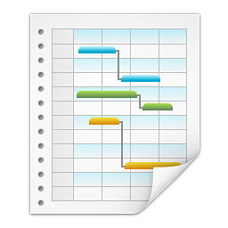
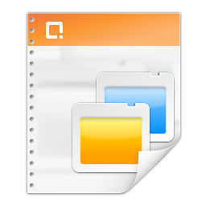

Diseño y producción
multimedia con
open-source
Flavio Huanca Rodriguez
Diseñador en Le Casting Sao Paulo, Acustica SP Telcenet telefonia Vo-ip
Técnicas en animacion, dibujo, diseño industrial y 3D
Uso de Software Libre para trabajos y linux
¿Que es Open source?
Aplicaciones
Open-source no se limita a programas
No se limita a lo gratuito
Existe gran variedad
¿porque debo participar?
Crescimiento y evolución
Auditoría de Código
Seguridad
Alemania
Alemania destinó en 2009 mas de 500 millones de euros al proyecto “open-source and green IT”
Argentina
Utilización de software libre desde el 2010 en diferentes provincias bajo licencia GPL
Brasil
Gobierno federal e instituciones relacionadas usan software libre a gran escala.
Banco de Brasil migró sus estaciones de trabajo y centrales para sistemas linux y opensource.
Estados Unidos
Dreamworks: La Pelicula Madagascar fue hecho enteramente en computadoras usando Linux. Utilizaron estaciones xw8000 de alta performance de la HP. Sistema operacional Red Hat Linux 3, procesadores duplos Intel Xeon 2,8 Ghz, placa de vídeo nVidia Quadro 4 XGL, 2 GB de memória RAM y monitores duplos.


 |
 |  |
Padronización | |
|  |
Problemas comunes
Solución
Uso de formatos universales:
ODF
SVG
OGG
OGV
PDF
Mercado
Ingreso en el mercado
Entrar en un proyecto de de software open-source (OSS, FOSS)
Capacitacion profesional
Emprendimiento
Trabajando con Linux
Caracteristica de Software
Rendimiento
Estabilidad
Recuperar sesion de datos
Trabajando con imagenes
Gimp
Editor bitmap portable
Soporte a diversos formatos de imagen
Soporta multi capas, agrupa en folders
Leve en la instalación
Soporte a Plug-ins y scripts
Ejemplo
Gimp vs Photoshop
Programa Photoshop
Programa Gimp
Krita
Ideal para dibujantes y diseñadores de comics
Grande cantidad de paletas, pinceles, degradados, texturas.
Soporte a DrawPad y perifericos de diseño.
Recursos de Filtros dinamicos y herramientas de ayuda.